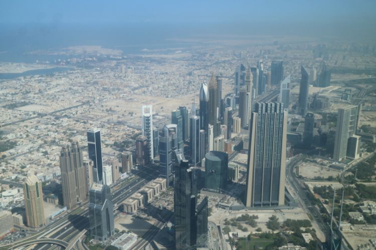
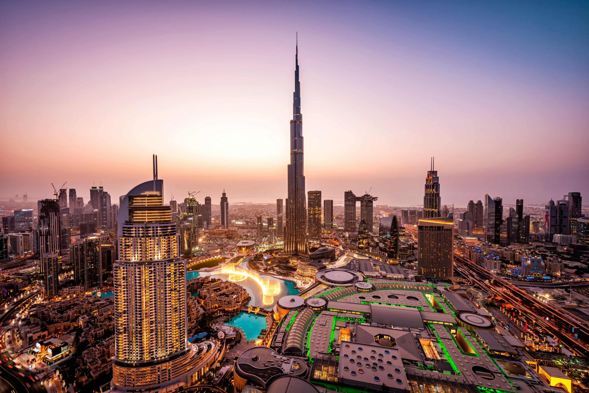

 
Uni Emirat Arab (UEA) adalah sebuah negara federasi dari tujuh emirat yang kaya akan minyak bumi. Tujuh emirat ini adalah: Abu Dhabi, Ajman, Dubai, Fujairah, Ras al-Khaimah, Sharjah dan Umm al-Qaiwain, UEA adalah tempat bagi bangunan tertinggi di dunia yaitu Burj Khalifa.
Saat ini, penduduknya yang sangat kosmopolitan menikmati kekayaan yang melimpah dan arsitektur Islam tradisional bercampur dengan pusat perbelanjaan mewah. Dan pekerja datang dari seluruh dunia terpikat oleh gaji bebas pajak sambil menikmati terik matahari sepanjang tahun karena hanya sekitar 20 persen penduduk yang tinggal di negara itu yang sebenarnya lahir secara lokal.
Pertanian, perikanan, dan mutiara perdagangan, dahulunya adalah andalan ekonomi negara ini. Kemudian minyak ditemukan pada 1950-an dan membuat segalanya berubah. Dua negara paling terkenal dalam persatuan Emirat Arab adalah Abu Dhabi dan Dubai. Pendapatan per kapita yang mencapai USD 72.180 atau setara Rp1,06 miliar per tahun, yang sebagian besar diperoleh dari suplai minyak yang melimpah di sana.
Kekayaan Uni Emirat Arab berdasarkan pengeluaran minyak dan gas yaitu 33% dari GDP negara itu. Emirat Arab adalah negara penghasil minyak ketiga terbesar di kawasan teluk setelah Arab Saudi dan Iran. Sejak 1973, Uni Emirat Arab telah mengalami perubahan dari negara kecil yang terletak di gurun menjadi negara modern dengan taraf kehidupan yang tinggi.
Islam adalah yang terbesar dan menjadi agama resmi negara UEA. Pemerintah memberikan wewenang kepada polisi untuk menjaga toleransi dalam beragama dan jarang terlibat dalam aktivitas keagamaan Non-Muslim. Hal yang sama juga diterapkan oleh warga Non-Muslim dengan tidak mencampuri urusan keagamaan Islam dalam berbagai hal.
Bahasa Arab adalah bahasa nasional Uni Emirat Arab. Dialek Teluk bahasa Arab dituturkan secara asli oleh orang-orang Emirat . Karena daerah itu diduduki oleh Inggris hingga 1971, bahasa Inggris adalah bahasa utama di UAE. Dengan demikian, pengetahuan tentang bahasa adalah persyaratan ketika melamar untuk sebagian besar pekerjaan lokal. Bahasa dunia lainnya diwakili oleh populasi ekspatriat yang diambil dari campuran beragam kebangsaan.